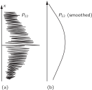

37. Quantum Behavior
37–1 Atomic mechanics#
In the last few chapters we have treated the essential ideas necessary for an understanding of most of the important phenomena of light—or electromagnetic radiation in general. (We have left a few special topics for next year. Specifically, the theory of the index of dense materials and total internal reflection.) What we have dealt with is called the “classical theory” of electric waves, which turns out to be a completely adequate description of nature for a large number of effects. We have not had to worry yet about the fact that light energy comes in lumps or “photons.”
We would like to take up as our next subject the problem of the behavior of relatively large pieces of matter—their mechanical and thermal properties, for instance. In discussing these, we will find that the “classical” (or older) theory fails almost immediately, because matter is really made up of atomic-sized particles. Still, we will deal only with the classical part, because that is the only part that we can understand using the classical mechanics we have been learning. But we shall not be very successful. We shall find that in the case of matter, unlike the case of light, we shall be in difficulty relatively soon. We could, of course, continuously skirt away from the atomic effects, but we shall instead interpose here a short excursion in which we will describe the basic ideas of the quantum properties of matter, i.e., the quantum ideas of atomic physics, so that you will have some feeling for what it is we are leaving out. For we will have to leave out some important subjects that we cannot avoid coming close to.
So we will give now the introduction to the subject of quantum mechanics, but will not be able actually to get into the subject until much later.
“Quantum mechanics” is the description of the behavior of matter in all its details and, in particular, of the happenings on an atomic scale. Things on a very small scale behave like nothing that you have any direct experience about. They do not behave like waves, they do not behave like particles, they do not behave like clouds, or billiard balls, or weights on springs, or like anything that you have ever seen.
Newton thought that light was made up of particles, but then it was discovered, as we have seen here, that it behaves like a wave. Later, however (in the beginning of the twentieth century) it was found that light did indeed sometimes behave like a particle. Historically, the electron, for example, was thought to behave like a particle, and then it was found that in many respects it behaved like a wave. So it really behaves like neither. Now we have given up. We say: “It is like neither.”
There is one lucky break, however—electrons behave just like light. The quantum behavior of atomic objects (electrons, protons, neutrons, photons, and so on) is the same for all, they are all “particle waves,” or whatever you want to call them. So what we learn about the properties of electrons (which we shall use for our examples) will apply also to all “particles,” including photons of light.
The gradual accumulation of information about atomic and small-scale behavior during the first quarter of the 20th century, which gave some indications about how small things do behave, produced an increasing confusion which was finally resolved in 1926 and 1927 by Schrödinger, Heisenberg, and Born. They finally obtained a consistent description of the behavior of matter on a small scale. We take up the main features of that description in this chapter.
Because atomic behavior is so unlike ordinary experience, it is very difficult to get used to and it appears peculiar and mysterious to everyone, both to the novice and to the experienced physicist. Even the experts do not understand it the way they would like to, and it is perfectly reasonable that they should not, because all of direct, human experience and of human intuition applies to large objects. We know how large objects will act, but things on a small scale just do not act that way. So we have to learn about them in a sort of abstract or imaginative fashion and not by connection with our direct experience.
In this chapter we shall tackle immediately the basic element of the mysterious behavior in its most strange form. We choose to examine a phenomenon which is impossible, absolutely impossible, to explain in any classical way, and which has in it the heart of quantum mechanics. In reality, it contains the only mystery. We cannot explain the mystery in the sense of “explaining” how it works. We will tell you how it works. In telling you how it works we will have told you about the basic peculiarities of all quantum mechanics.
37–2 An experiment with bullets#
To try to understand the quantum behavior of electrons, we shall compare and contrast their behavior, in a particular experimental setup, with the more familiar behavior of particles like bullets, and with the behavior of waves like water waves. We consider first the behavior of bullets in the experimental setup shown diagrammatically in Fig. 37–1. We have a machine gun that shoots a stream of bullets. It is not a very good gun, in that it sprays the bullets (randomly) over a fairly large angular spread, as indicated in the figure. In front of the gun we have a wall (made of armor plate) that has in it two holes just about big enough to let a bullet through. Beyond the wall is a backstop (say a thick wall of wood) which will “absorb” the bullets when they hit it. In front of the backstop we have an object which we shall call a “detector” of bullets. It might be a box containing sand. Any bullet that enters the detector will be stopped and accumulated. When we wish, we can empty the box and count the number of bullets that have been caught. The detector can be moved back and forth (in what we will call the x -direction). With this apparatus, we can find out experimentally the answer to the question: “What is the probability that a bullet which passes through the holes in the wall will arrive at the backstop at the distance x from the center?” First, you should realize that we should talk about probability, because we cannot say definitely where any particular bullet will go. A bullet which happens to hit one of the holes may bounce off the edges of the hole, and may end up anywhere at all. By “probability” we mean the chance that the bullet will arrive at the detector, which we can measure by counting the number which arrive at the detector in a certain time and then taking the ratio of this number to the total number that hit the backstop during that time. Or, if we assume that the gun always shoots at the same rate during the measurements, the probability we want is just proportional to the number that reach the detector in some standard time interval.
For our present purposes we would like to imagine a somewhat idealized experiment in which the bullets are not real bullets, but are indestructible bullets—they cannot break in half. In our experiment we find that bullets always arrive in lumps, and when we find something in the detector, it is always one whole bullet. If the rate at which the machine gun fires is made very low, we find that at any given moment either nothing arrives, or one and only one—exactly one—bullet arrives at the backstop. Also, the size of the lump certainly does not depend on the rate of firing of the gun. We shall say: “Bullets always arrive in identical lumps.” What we measure with our detector is the probability of arrival of a lump. And we measure the probability as a function of x. The result of such measurements with this apparatus (we have not yet done the experiment, so we are really imagining the result) are plotted in the graph drawn in part (c) of Fig. 37–1. In the graph we plot the probability to the right and x vertically, so that the x -scale fits the diagram of the apparatus. We call the probability P_{12} because the bullets may have come either through hole 1 or through hole 2. You will not be surprised that P_{12} is large near the middle of the graph but gets small if x is very large. You may wonder, however, why P_{12} has its maximum value at x = 0. We can understand this fact if we do our experiment again after covering up hole 2, and once more while covering up hole 1. When hole 2 is covered, bullets can pass only through hole 1, and we get the curve marked P_1 in part (b) of the figure. As you would expect, the maximum of P_1 occurs at the value of x which is on a straight line with the gun and hole 1. When hole 1 is closed, we get the symmetric curve P_2 drawn in the figure. P_2 is the probability distribution for bullets that pass through hole 2. Comparing parts (b) and (c) of Fig. 37–1, we find the important result that
The probabilities just add together. The effect with both holes open is the sum of the effects with each hole open alone. We shall call this result an observation of “ no interference,” for a reason that you will see later. So much for bullets. They come in lumps, and their probability of arrival shows no interference.
37–3 An experiment with waves#

Now we wish to consider an experiment with water waves. The apparatus is shown diagrammatically in Fig. 37–2. We have a shallow trough of water. A small object labeled the “wave source” is jiggled up and down by a motor and makes circular waves. To the right of the source we have again a wall with two holes, and beyond that is a second wall, which, to keep things simple, is an “absorber,” so that there is no reflection of the waves that arrive there. This can be done by building a gradual sand “beach.” In front of the beach we place a detector which can be moved back and forth in the x -direction, as before. The detector is now a device which measures the “intensity” of the wave motion. You can imagine a gadget which measures the height of the wave motion, but whose scale is calibrated in proportion to the square of the actual height, so that the reading is proportional to the intensity of the wave. Our detector reads, then, in proportion to the energy being carried by the wave—or rather, the rate at which energy is carried to the detector.
With our wave apparatus, the first thing to notice is that the intensity can have any size. If the source just moves a very small amount, then there is just a little bit of wave motion at the detector. When there is more motion at the source, there is more intensity at the detector. The intensity of the wave can have any value at all. We would not say that there was any “lumpiness” in the wave intensity.
Now let us measure the wave intensity for various values of x (keeping the wave source operating always in the same way). We get the interesting-looking curve marked I_{12} in part (c) of the figure.
We have already worked out how such patterns can come about when we studied the interference of electric waves. In this case we would observe that the original wave is diffracted at the holes, and new circular waves spread out from each hole. If we cover one hole at a time and measure the intensity distribution at the absorber we find the rather simple intensity curves shown in part (b) of the figure. I_1 is the intensity of the wave from hole 1 (which we find by measuring when hole 2 is blocked off) and I_2 is the intensity of the wave from hole 2 (seen when hole 1 is blocked).
The intensity I_{12} observed when both holes are open is certainly not the sum of I_1 and I_2. We say that there is “interference” of the two waves. At some places (where the curve I_{12} has its maxima) the waves are “in phase” and the wave peaks add together to give a large amplitude and, therefore, a large intensity. We say that the two waves are “interfering constructively” at such places. There will be such constructive interference wherever the distance from the detector to one hole is a whole number of wavelengths larger (or shorter) than the distance from the detector to the other hole.
At those places where the two waves arrive at the detector with a phase difference of \pi (where they are “out of phase”) the resulting wave motion at the detector will be the difference of the two amplitudes. The waves “interfere destructively,” and we get a low value for the wave intensity. We expect such low values wherever the distance between hole 1 and the detector is different from the distance between hole 2 and the detector by an odd number of half-wavelengths. The low values of I_{12} in Fig. 37–2 correspond to the places where the two waves interfere destructively.
You will remember that the quantitative relationship between I_1, I_2, and I_{12} can be expressed in the following way: The instantaneous height of the water wave at the detector for the wave from hole 1 can be written as (the real part of) \hat{h}_1e^{i\omega t}, where the “amplitude” \hat{h}_1 is, in general, a complex number. The intensity is proportional to the mean squared height or, when we use the complex numbers, to \left|\hat{h}_1\right|^2. Similarly, for hole 2 the height is \hat{h}_2e^{i\omega t} and the intensity is proportional to \left|\hat{h}_2\right|^2. When both holes are open, the wave heights add to give the height (\hat{h}_1 + \hat{h}_2)e^{i\omega t} and the intensity \left|\hat{h}_1 + \hat{h}_2\right|^2. Omitting the constant of proportionality for our present purposes, the proper relations for interfering waves are
You will notice that the result is quite different from that obtained with bullets (Eq. 37.1). If we expand \left|\hat{h}_1 + \hat{h}_2\right|^2 we see that
where \delta is the phase difference between \hat{h}_1 and \hat{h}_2. In terms of the intensities, we could write
The last term in ( 37.4) is the “interference term.” So much for water waves. The intensity can have any value, and it shows interference.
37–4 An experiment with electrons#

Now we imagine a similar experiment with electrons. It is shown diagrammatically in Fig. 37–3. We make an electron gun which consists of a tungsten wire heated by an electric current and surrounded by a metal box with a hole in it. If the wire is at a negative voltage with respect to the box, electrons emitted by the wire will be accelerated toward the walls and some will pass through the hole. All the electrons which come out of the gun will have (nearly) the same energy. In front of the gun is again a wall (just a thin metal plate) with two holes in it. Beyond the wall is another plate which will serve as a “backstop.” In front of the backstop we place a movable detector. The detector might be a geiger counter or, perhaps better, an electron multiplier, which is connected to a loudspeaker.
We should say right away that you should not try to set up this experiment (as you could have done with the two we have already described). This experiment has never been done in just this way. The trouble is that the apparatus would have to be made on an impossibly small scale to show the effects we are interested in. We are doing a “thought experiment,” which we have chosen because it is easy to think about. We know the results that would be obtained because there are many experiments that have been done, in which the scale and the proportions have been chosen to show the effects we shall describe.
The first thing we notice with our electron experiment is that we hear sharp “clicks” from the detector (that is, from the loudspeaker). And all “clicks” are the same. There are no “half-clicks.”
We would also notice that the “clicks” come very erratically. Something like: click ….. click-click … click …….. click …. click-click …… click …, etc., just as you have, no doubt, heard a geiger counter operating. If we count the clicks which arrive in a sufficiently long time—say for many minutes—and then count again for another equal period, we find that the two numbers are very nearly the same. So we can speak of the average rate at which the clicks are heard (so-and-so-many clicks per minute on the average).
As we move the detector around, the rate at which the clicks appear is faster or slower, but the size (loudness) of each click is always the same. If we lower the temperature of the wire in the gun the rate of clicking slows down, but still each click sounds the same. We would notice also that if we put two separate detectors at the backstop, one or the other would click, but never both at once. (Except that once in a while, if there were two clicks very close together in time, our ear might not sense the separation.) We conclude, therefore, that whatever arrives at the backstop arrives in “lumps.” All the “lumps” are the same size: only whole “lumps” arrive, and they arrive one at a time at the backstop. We shall say: “Electrons always arrive in identical lumps.”
Just as for our experiment with bullets, we can now proceed to find experimentally the answer to the question: “What is the relative probability that an electron ‘lump’ will arrive at the backstop at various distances x from the center?” As before, we obtain the relative probability by observing the rate of clicks, holding the operation of the gun constant. The probability that lumps will arrive at a particular x is proportional to the average rate of clicks at that x.
The result of our experiment is the interesting curve marked P_{12} in part (c) of Fig. 37–3. Yes! That is the way electrons go.
37–5 The interference of electron waves#
Now let us try to analyze the curve of Fig. 37–3 to see whether we can understand the behavior of the electrons. The first thing we would say is that since they come in lumps, each lump, which we may as well call an electron, has come either through hole 1 or through hole 2. Let us write this in the form of a “Proposition”: Proposition A: Each electron either goes through hole 1 or it goes through hole 2.
Assuming Proposition A, all electrons that arrive at the backstop can be divided into two classes: (1) those that come through hole 1, and (2) those that come through hole 2. So our observed curve must be the sum of the effects of the electrons which come through hole 1 and the electrons which come through hole 2. Let us check this idea by experiment. First, we will make a measurement for those electrons that come through hole 1. We block off hole 2 and make our counts of the clicks from the detector. From the clicking rate, we get P_1. The result of the measurement is shown by the curve marked P_1 in part (b) of Fig. 37–3. The result seems quite reasonable. In a similar way, we measure P_2, the probability distribution for the electrons that come through hole 2. The result of this measurement is also drawn in the figure.
The result P_{12} obtained with both holes open is clearly not the sum of P_1 and P_2, the probabilities for each hole alone. In analogy with our water-wave experiment, we say: “There is interference.”
How can such an interference come about? Perhaps we should say: “Well, that means, presumably, that it is not true that the lumps go either through hole 1 or hole 2, because if they did, the probabilities should add. Perhaps they go in a more complicated way. They split in half and …” But no! They cannot, they always arrive in lumps … “Well, perhaps some of them go through 1, and then they go around through 2, and then around a few more times, or by some other complicated path … then by closing hole 2, we changed the chance that an electron that started out through hole 1 would finally get to the backstop …” But notice! There are some points at which very few electrons arrive when both holes are open, but which receive many electrons if we close one hole, so closing one hole increased the number from the other. Notice, however, that at the center of the pattern, P_{12} is more than twice as large as P_1 + P_2. It is as though closing one hole decreased the number of electrons which come through the other hole. It seems hard to explain both effects by proposing that the electrons travel in complicated paths.
It is all quite mysterious. And the more you look at it the more mysterious it seems. Many ideas have been concocted to try to explain the curve for P_{12} in terms of individual electrons going around in complicated ways through the holes. None of them has succeeded. None of them can get the right curve for P_{12} in terms of P_1 and P_2.
Yet, surprisingly enough, the mathematics for relating P_1 and P_2 to P_{12} is extremely simple. For P_{12} is just like the curve I_{12} of Fig. 37–2, and that was simple. What is going on at the backstop can be described by two complex numbers that we can call \hat{\phi}_1 and \hat{\phi}_2 (they are functions of x, of course). The absolute square of \hat{\phi}_1 gives the effect with only hole 1 open. That is, P_1 = \left|\hat{\phi}_1\right|^2. The effect with only hole 2 open is given by \hat{\phi}_2 in the same way. That is, P_2 = \left|\hat{\phi}_2\right|^2. And the combined effect of the two holes is just P_{12} = \left|\hat{\phi}_1 + \hat{\phi}_2\right|^2. The mathematics is the same as that we had for the water waves! (It is hard to see how one could get such a simple result from a complicated game of electrons going back and forth through the plate on some strange trajectory.)
We conclude the following: The electrons arrive in lumps, like particles, and the probability of arrival of these lumps is distributed like the distribution of intensity of a wave. It is in this sense that an electron behaves “sometimes like a particle and sometimes like a wave.”
Incidentally, when we were dealing with classical waves we defined the intensity as the mean over time of the square of the wave amplitude, and we used complex numbers as a mathematical trick to simplify the analysis. But in quantum mechanics it turns out that the amplitudes must be represented by complex numbers. The real parts alone will not do. That is a technical point, for the moment, because the formulas look just the same.
Since the probability of arrival through both holes is given so simply, although it is not equal to (P_1 + P_2), that is really all there is to say. But there are a large number of subtleties involved in the fact that nature does work this way. We would like to illustrate some of these subtleties for you now. First, since the number that arrives at a particular point is not equal to the number that arrives through 1 plus the number that arrives through 2, as we would have concluded from Proposition A, undoubtedly we should conclude that Proposition A is false. It is not true that the electrons go either through hole 1 or hole 2. But that conclusion can be tested by another experiment.
37–6 Watching the electrons#

We shall now try the following experiment. To our electron apparatus we add a very strong light source, placed behind the wall and between the two holes, as shown in Fig. 37–4. We know that electric charges scatter light. So when an electron passes, however it does pass, on its way to the detector, it will scatter some light to our eye, and we can see where the electron goes. If, for instance, an electron were to take the path via hole 2 that is sketched in Fig. 37–4, we should see a flash of light coming from the vicinity of the place marked A in the figure. If an electron passes through hole 1 we would expect to see a flash from the vicinity of the upper hole. If it should happen that we get light from both places at the same time, because the electron divides in half … Let us just do the experiment!
Here is what we see: every time that we hear a “click” from our electron detector (at the backstop), we also see a flash of light either near hole 1 or near hole 2, but never both at once! And we observe the same result no matter where we put the detector. From this observation we conclude that when we look at the electrons we find that the electrons go either through one hole or the other. Experimentally, Proposition A is necessarily true.
What, then, is wrong with our argument against Proposition A? Why isn’t P_{12} just equal to P_1 + P_2? Back to experiment! Let us keep track of the electrons and find out what they are doing. For each position ( x -location) of the detector we will count the electrons that arrive and also keep track of which hole they went through, by watching for the flashes. We can keep track of things this way: whenever we hear a “click” we will put a count in Column 1 if we see the flash near hole 1, and if we see the flash near hole 2, we will record a count in Column 2. Every electron which arrives is recorded in one of two classes: those which come through 1 and those which come through 2. From the number recorded in Column 1 we get the probability P_1' that an electron will arrive at the detector via hole 1; and from the number recorded in Column 2 we get P_2', the probability that an electron will arrive at the detector via hole 2. If we now repeat such a measurement for many values of x, we get the curves for P_1' and P_2' shown in part (b) of Fig. 37–4.
Well, that is not too surprising! We get for P_1' something quite similar to what we got before for P_1 by blocking off hole 2; and P_2' is similar to what we got by blocking hole 1. So there is not any complicated business like going through both holes. When we watch them, the electrons come through just as we would expect them to come through. Whether the holes are closed or open, those which we see come through hole 1 are distributed in the same way whether hole 2 is open or closed.
But wait! What do we have now for the total probability, the probability that an electron will arrive at the detector by any route? We already have that information. We just pretend that we never looked at the light flashes, and we lump together the detector clicks which we have separated into the two columns. We must just add the numbers. For the probability that an electron will arrive at the backstop by passing through either hole, we do find P_{12}' = P_1' + P_2'. That is, although we succeeded in watching which hole our electrons come through, we no longer get the old interference curve P_{12}, but a new one, P_{12}' showing no interference! If we turn out the light P_{12} is restored.
We must conclude that when we look at the electrons the distribution of them on the screen is different than when we do not look. Perhaps it is turning on our light source that disturbs things? It must be that the electrons are very delicate, and the light, when it scatters off the electrons, gives them a jolt that changes their motion. We know that the electric field of the light acting on a charge will exert a force on it. So perhaps we should expect the motion to be changed. Anyway, the light exerts a big influence on the electrons. By trying to “watch” the electrons we have changed their motions. That is, the jolt given to the electron when the photon is scattered by it is such as to change the electron’s motion enough so that if it might have gone to where P_{12} was at a maximum it will instead land where P_{12} was a minimum; that is why we no longer see the wavy interference effects.
You may be thinking: “Don’t use such a bright source! Turn the brightness down! The light waves will then be weaker and will not disturb the electrons so much. Surely, by making the light dimmer and dimmer, eventually the wave will be weak enough that it will have a negligible effect.” O.K. Let’s try it. The first thing we observe is that the flashes of light scattered from the electrons as they pass by does not get weaker. It is always the same-sized flash. The only thing that happens as the light is made dimmer is that sometimes we hear a “click” from the detector but see no flash at all. The electron has gone by without being “seen.” What we are observing is that light also acts like electrons, we knew that it was “wavy,” but now we find that it is also “lumpy.” It always arrives—or is scattered—in lumps that we call “photons.” As we turn down the intensity of the light source we do not change the size of the photons, only the rate at which they are emitted. That explains why, when our source is dim, some electrons get by without being seen. There did not happen to be a photon around at the time the electron went through.
This is all a little discouraging. If it is true that whenever we “see” the electron we see the same-sized flash, then those electrons we see are always the disturbed ones. Let us try the experiment with a dim light anyway. Now whenever we hear a click in the detector we will keep a count in three columns: in Column (1) those electrons seen by hole 1, in Column (2) those electrons seen by hole 2, and in Column (3) those electrons not seen at all. When we work up our data (computing the probabilities) we find these results: Those “seen by hole 1 ” have a distribution like P_1'; those “seen by hole 2 ” have a distribution like P_2' (so that those “seen by either hole 1 or 2 ” have a distribution like P_{12}'); and those “not seen at all” have a “wavy” distribution just like P_{12} of Fig. 37–3! If the electrons are not seen, we have interference!
That is understandable. When we do not see the electron, no photon disturbs it, and when we do see it, a photon has disturbed it. There is always the same amount of disturbance because the light photons all produce the same-sized effects and the effect of the photons being scattered is enough to smear out any interference effect.
Is there not some way we can see the electrons without disturbing them? We learned in an earlier chapter that the momentum carried by a “photon” is inversely proportional to its wavelength ( p = h/\lambda). Certainly the jolt given to the electron when the photon is scattered toward our eye depends on the momentum that photon carries. Aha! If we want to disturb the electrons only slightly we should not have lowered the intensity of the light, we should have lowered its frequency (the same as increasing its wavelength). Let us use light of a redder color. We could even use infrared light, or radiowaves (like radar), and “see” where the electron went with the help of some equipment that can “see” light of these longer wavelengths. If we use “gentler” light perhaps we can avoid disturbing the electrons so much.
Let us try the experiment with longer waves. We shall keep repeating our experiment, each time with light of a longer wavelength. At first, nothing seems to change. The results are the same. Then a terrible thing happens. You remember that when we discussed the microscope we pointed out that, due to the wave nature of the light, there is a limitation on how close two spots can be and still be seen as two separate spots. This distance is of the order of the wavelength of light. So now, when we make the wavelength longer than the distance between our holes, we see a big fuzzy flash when the light is scattered by the electrons. We can no longer tell which hole the electron went through! We just know it went somewhere! And it is just with light of this color that we find that the jolts given to the electron are small enough so that P_{12}' begins to look like P_{12} —that we begin to get some interference effect. And it is only for wavelengths much longer than the separation of the two holes (when we have no chance at all of telling where the electron went) that the disturbance due to the light gets sufficiently small that we again get the curve P_{12} shown in Fig. 37–3.
In our experiment we find that it is impossible to arrange the light in such a way that one can tell which hole the electron went through, and at the same time not disturb the pattern. It was suggested by Heisenberg that the then new laws of nature could only be consistent if there were some basic limitation on our experimental capabilities not previously recognized. He proposed, as a general principle, his uncertainty principle, which we can state in terms of our experiment as follows: “It is impossible to design an apparatus to determine which hole the electron passes through, that will not at the same time disturb the electrons enough to destroy the interference pattern.” If an apparatus is capable of determining which hole the electron goes through, it cannot be so delicate that it does not disturb the pattern in an essential way. No one has ever found (or even thought of) a way around the uncertainty principle. So we must assume that it describes a basic characteristic of nature.
The complete theory of quantum mechanics which we now use to describe atoms and, in fact, all matter depends on the correctness of the uncertainty principle. Since quantum mechanics is such a successful theory, our belief in the uncertainty principle is reinforced. But if a way to “beat” the uncertainty principle were ever discovered, quantum mechanics would give inconsistent results and would have to be discarded as a valid theory of nature.
“Well,” you say, “what about Proposition A? It is true, or is it not true, that the electron either goes through hole 1 or it goes through hole 2?” The only answer that can be given is that we have found from experiment that there is a certain special way that we have to think in order that we do not get into inconsistencies. What we must say (to avoid making wrong predictions) is the following. If one looks at the holes or, more accurately, if one has a piece of apparatus which is capable of determining whether the electrons go through hole 1 or hole 2, then one can say that it goes either through hole 1 or hole 2. But, when one does not try to tell which way the electron goes, when there is nothing in the experiment to disturb the electrons, then one may not say that an electron goes either through hole 1 or hole 2. If one does say that, and starts to make any deductions from the statement, he will make errors in the analysis. This is the logical tightrope on which we must walk if we wish to describe nature successfully.
If the motion of all matter—as well as electrons—must be described in terms of waves, what about the bullets in our first experiment? Why didn’t we see an interference pattern there? It turns out that for the bullets the wavelengths were so tiny that the interference patterns became very fine. So fine, in fact, that with any detector of finite size one could not distinguish the separate maxima and minima. What we saw was only a kind of average, which is the classical curve. In Fig. 37–5 we have tried to indicate schematically what happens with large-scale objects. Part (a) of the figure shows the probability distribution one might predict for bullets, using quantum mechanics. The rapid wiggles are supposed to represent the interference pattern one gets for waves of very short wavelength. Any physical detector, however, straddles several wiggles of the probability curve, so that the measurements show the smooth curve drawn in part (b) of the figure.

37–7 First principles of quantum mechanics#
We will now write a summary of the main conclusions of our experiments. We will, however, put the results in a form which makes them true for a general class of such experiments. We can write our summary more simply if we first define an “ideal experiment” as one in which there are no uncertain external influences, i.e., no jiggling or other things going on that we cannot take into account. We would be quite precise if we said: “An ideal experiment is one in which all of the initial and final conditions of the experiment are completely specified.” What we will call “an event” is, in general, just a specific set of initial and final conditions. (For example: “an electron leaves the gun, arrives at the detector, and nothing else happens.”) Now for our summary.
Summary The probability of an event in an ideal experiment is given by the square of the absolute value of a complex number \phi which is called the probability amplitude:
When an event can occur in several alternative ways, the probability amplitude for the event is the sum of the probability amplitudes for each way considered separately. There is interference:
If an experiment is performed which is capable of determining whether one or another alternative is actually taken, the probability of the event is the sum of the probabilities for each alternative. The interference is lost:
One might still like to ask: “How does it work? What is the machinery behind the law?” No one has found any machinery behind the law. No one can “explain” any more than we have just “explained.” No one will give you any deeper representation of the situation. We have no ideas about a more basic mechanism from which these results can be deduced.
We would like to emphasize a very important difference between classical and quantum mechanics. We have been talking about the probability that an electron will arrive in a given circumstance. We have implied that in our experimental arrangement (or even in the best possible one) it would be impossible to predict exactly what would happen. We can only predict the odds! This would mean, if it were true, that physics has given up on the problem of trying to predict exactly what will happen in a definite circumstance. Yes! physics has given up. We do not know how to predict what would happen in a given circumstance, and we believe now that it is impossible, that the only thing that can be predicted is the probability of different events. It must be recognized that this is a retrenchment in our earlier ideal of understanding nature. It may be a backward step, but no one has seen a way to avoid it.
We make now a few remarks on a suggestion that has sometimes been made to try to avoid the description we have given: “Perhaps the electron has some kind of internal works—some inner variables—that we do not yet know about. Perhaps that is why we cannot predict what will happen. If we could look more closely at the electron we could be able to tell where it would end up.” So far as we know, that is impossible. We would still be in difficulty. Suppose we were to assume that inside the electron there is some kind of machinery that determines where it is going to end up. That machine must also determine which hole it is going to go through on its way. But we must not forget that what is inside the electron should not be dependent on what we do, and in particular upon whether we open or close one of the holes. So if an electron, before it starts, has already made up its mind (a) which hole it is going to use, and (b) where it is going to land, we should find P_1 for those electrons that have chosen hole 1, P_2 for those that have chosen hole 2, and necessarily the sum P_1+P_2 for those that arrive through the two holes. There seems to be no way around this. But we have verified experimentally that that is not the case. And no one has figured a way out of this puzzle. So at the present time we must limit ourselves to computing probabilities. We say “at the present time,” but we suspect very strongly that it is something that will be with us forever—that it is impossible to beat that puzzle—that this is the way nature really is.
37–8 The uncertainty principle#
This is the way Heisenberg stated the uncertainty principle originally: If you make the measurement on any object, and you can determine the x -component of its momentum with an uncertainty \Delta p, you cannot, at the same time, know its x -position more accurately than \Delta x\geq\hbar/2\Delta p. The uncertainties in the position and momentum at any instant must have their product greater than or equal to half the reduced Planck constant. This is a special case of the uncertainty principle that was stated above more generally. The more general statement was that one cannot design equipment in any way to determine which of two alternatives is taken, without, at the same time, destroying the pattern of interference.
Let us show for one particular case that the kind of relation given by Heisenberg must be true in order to keep from getting into trouble. We imagine a modification of the experiment of Fig. 37–3, in which the wall with the holes consists of a plate mounted on rollers so that it can move freely up and down (in the x -direction), as shown in Fig. 37–6. By watching the motion of the plate carefully we can try to tell which hole an electron goes through. Imagine what happens when the detector is placed at x = 0. We would expect that an electron which passes through hole 1 must be deflected downward by the plate to reach the detector. Since the vertical component of the electron momentum is changed, the plate must recoil with an equal momentum in the opposite direction. The plate will get an upward kick. If the electron goes through the lower hole, the plate should feel a downward kick. It is clear that for every position of the detector, the momentum received by the plate will have a different value for a traversal via hole 1 than for a traversal via hole 2. So! Without disturbing the electrons at all, but just by watching the plate, we can tell which path the electron used.

Now in order to do this it is necessary to know what the momentum of the screen is, before the electron goes through. So when we measure the momentum after the electron goes by, we can figure out how much the plate’s momentum has changed. But remember, according to the uncertainty principle we cannot at the same time know the position of the plate with an arbitrary accuracy. But if we do not know exactly where the plate is we cannot say precisely where the two holes are. They will be in a different place for every electron that goes through. This means that the center of our interference pattern will have a different location for each electron. The wiggles of the interference pattern will be smeared out. We shall show quantitatively in the next chapter that if we determine the momentum of the plate sufficiently accurately to determine from the recoil measurement which hole was used, then the uncertainty in the x -position of the plate will, according to the uncertainty principle, be enough to shift the pattern observed at the detector up and down in the x -direction about the distance from a maximum to its nearest minimum. Such a random shift is just enough to smear out the pattern so that no interference is observed.
The uncertainty principle “protects” quantum mechanics. Heisenberg recognized that if it were possible to measure the momentum and the position simultaneously with a greater accuracy, the quantum mechanics would collapse. So he proposed that it must be impossible. Then people sat down and tried to figure out ways of doing it, and nobody could figure out a way to measure the position and the momentum of anything—a screen, an electron, a billiard ball, anything—with any greater accuracy. Quantum mechanics maintains its perilous but accurate existence.